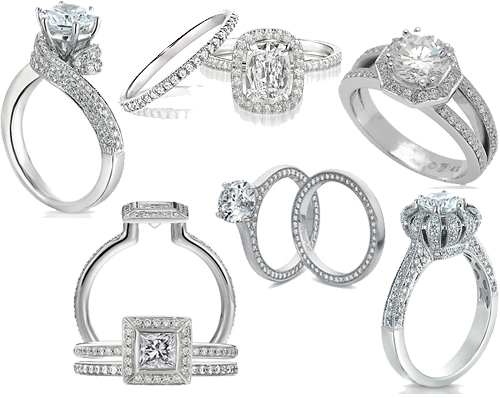
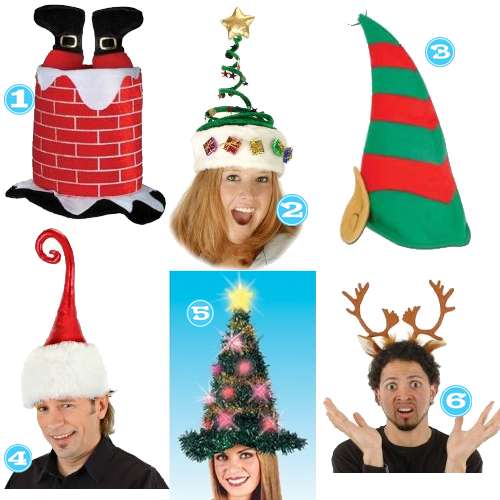

A Very Merry Christmas from the Tipsy Girls and their men 🙂 Photos taken at our 1st Annual Wine/Beer Tasting/Competition Christmas Party.

(We told the guys not to look too excited)


A Very Merry Christmas from the Tipsy Girls and their men 🙂 Photos taken at our 1st Annual Wine/Beer Tasting/Competition Christmas Party.
(We told the guys not to look too excited)
Do you guys set your table for Christmas dinner all nice and fancy? Do you have a centerpiece of some sort? I love all these selections and if you are crafty you could do them yourself for sure. My absolute fav and would totally try is the carnation snowman. Merry Christmas Ya’ll!
Christmas Eve holds a special place in my heart. Not only does the Der family celebrate all Christmas festivities on the Eve of Christmas, it is also the day that my husband proposed to me just 2 short years ago. I think Christmas time tends to be a very popular time to pop the question and with that in mind here are some gorgeous and unique sparklers. Plus, who out there doesn’t love to stare at some BIG.FAT.ROCKS??


If you are looking to bring some holiday cheer into your outfit for your family get together or party… I think one of these may do the trick!

When my TP (Tipsy Pal) AK showed these to me, I knew I had to share with all of you. Â These are too cute and encompass everything about me. Â Someone that is obsessed with cats and funky at the same time.

After digging a little deeper, I found the creator of these little jewels (Old World Primitives)Â not only has her own Etsy shop, but has a neat little unique blog as well. Â Enjoy! Â Or just laugh at how nuts I am.
P.S. Â Lets say you aren’t as awesome as I am and want these in dogs–she’s got em! Â See here.


For those stragglers out there still stumped by someone on their list or because you are a MAY-JA procrastinator here are my favorite gift guides out there. Of course aside from mine and Der’s and Sarah’s and Courtney’s and Courtney’s son’s and my husband’s advice for wannabe chefs, geeks and golfers (not Tiger).
It’s definitely that time of year again! Parties galore. Work parties, friend parties, family parties. Party.Party.Party. Here’s a look that will take you to all those parties without draining your Christmas shopping fund.

Anyone want to know whats on a 7-year-old’s Christmas list…?? Here it is.

As a side note, Ben (my boyfriend) and I Santa may or may not have shopped at kids.woot.com this year for many of these items 🙂
The Mission:create a list of fabulousness that I wouldn’t mind showing up under the tree on Christmas morning if $$$ were NO object!
The Result:


Recent Comments